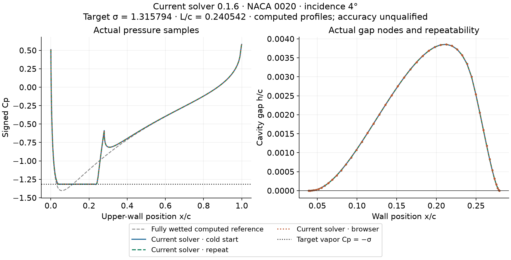
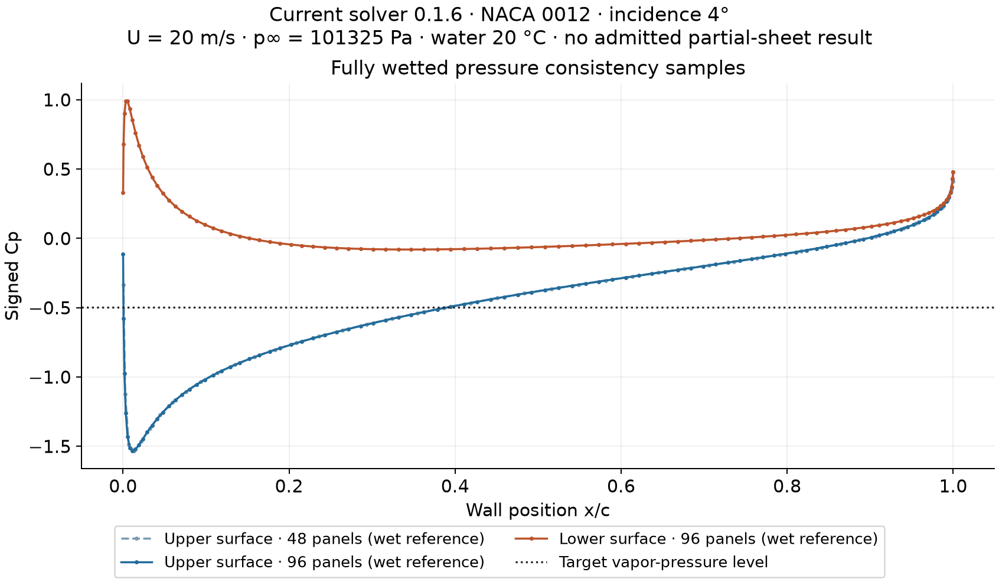

Hydrofoil target-sigma solver
Reported checks, actual browser evidence and open accuracy limits
Current driver 0.1.6, potential-flow core 0.3.4. Steady two-dimensional upper partial-sheet model with algebraic pressure recovery. Length and detachment are solved from the supplied cavitation number, or from speed, absolute pressure and water temperature.
A documented example passes the reported checks; hydrofoil accuracy remains unqualified. This is not matched experimental validation, a resolved re-entrant jet, cloud shedding, or a three-dimensional cavity-volume prediction. The original NACA 0012 case remains unadmitted, and the current fine-mesh search remains unresolved.
Actual fresh Edge worker: NACA 0020, incidence 4°, chord 0.16 m, target σ = 1.3157940493756035. No warm start or cached solution. The solve completed in 31.493 s, with L/c = 0.24054215390245, sigma residual 4.12 × 10−7, minimum sampled wet Cp + target σ = +0.0014732952, and nonnegative recorded gap. Actual CSV, JSON and HTML exports and desktop/mobile layout checks passed.
Current records: different execution types remain distinct
| Record | Execution | Driver | N | Target σ | Computed σ | L/c | Decision | Min wet Cp + target σ | Seconds |
|---|---|---|---|---|---|---|---|---|---|
| browser-016-fresh | Actual fresh Edge worker | 0.1.6-forward-research | 48 | 1.31579 | 1.31579 | 0.240542 | admitted-research-cavity | 0.0014733 | 31.493 |
| native-016-cold | Native Node.js | 0.1.6-forward-research | 48 | 1.31579 | 1.31579 | 0.240542 | admitted-research-cavity | 0.0014733 | 25.34 |
| native-016-repeat | Native Node.js | 0.1.6-forward-research | 48 | 1.31579 | 1.3158 | 0.240542 | admitted-research-cavity | 0.00147563 | 4.033 |
| native-016-original0012 | Native Node.js | 0.1.6-forward-research | 48 | 0.495842 | 0.967577 | 0.65 | rejected | -0.495183 | 45.358 |
| native-016-n64-bounded120 | Native Node.js | 0.1.6-forward-research | 64 | 1.31579 | 1.40068 | 0.06 | budget-exhausted | -0.0811082 | 120.017 |
The native repeat uses only a scalar warm seed returned by the same configuration; it still solves the equations afresh. The primary native and actual browser records have no warm start. N is the cavity panel count. A positive pressure margin in a rejected row does not resolve a missing target-sigma root. Rejected diagnostic profiles are not accepted cavity predictions.

Original physical-input case is still unresolved
NACA 0012 at 4°, U = 20 m/s, p∞ = 101325 Pa absolute, water at 20 °C and chord 0.16 m gives σ = 0.4958423469910795. The current forward search completed in 45.358 s with no target-sigma bracket. Its six resolved length samples span σ ≈ 0.967577–1.423819, above the requested value. That finite sample range is not proof that every other physical cavity topology is impossible. No accepted shape, area or volume is supplied for this case.

Fine-mesh check: no convergence claim
A new independently initialized current 64-panel search for the same NACA 0020 target exhausted its explicit 120 s budget. The initial L/c = 0.24 attempt reached its local allowance; the later L/c = 0.06 trial was rejected and the L/c = 0.65 attempt reached global expiry. It did not produce an admitted target-matched fine solution. This result is preserved separately from the historical 64-panel record. No current two-mesh or experimental accuracy qualification is claimed.
Numerical method changes and unchanged physical gates
The pressure-recovery amplitude now returns the numerically regular endpoint-root probe even if its gap is invalid. Such a closed negative-gap probe remains rejected physically and may only inform the outer detachment search. An endpoint-unresolved probe cannot fit beta or contribute a bracket sign. Detachment beta and station tolerances default to 2 × 10−4 and 2 × 10−6; explicit stricter values are retained, and looser requests are refused.
The starting L/c = 0.24 is a numerical guess. Near-target samples receive actual neighboring-length probes. Continuation uses the nearest resolved length in the same configuration, with its source recorded. Cooperative local time allowances prevent one failed initialization from consuming the entire search; global timeout and cancellation take priority. An indivisible solver step can overrun an allowance, but an overdue completed result is not admitted.
Potential-flow equations, recovery law, target-sigma tolerance, and the mandatory sampled pressure/gap gates are unchanged. Pressure and height are never clipped, wet samples are never deleted, and no discretization-error allowance makes a below-vapor sample pass. The implementation/admission suite has 96 scoped assertions, including eight bitwise fully wetted comparisons; those checks are not 96 physical-validation experiments.
Earlier actual failures are retained
| Record | Execution | Driver | N | Target σ | Computed σ | L/c | Decision | Min wet Cp + target σ | Seconds |
|---|---|---|---|---|---|---|---|---|---|
| browser-013-failed240 | Actual Edge worker | 0.1.3-forward-research | 48 | 1.31579 | 1.23379 | 0.4 | budget-exhausted | 0.0812761 | 240.025 |
| browser-014-failed240 | Actual Edge worker | 0.1.4-forward-research | 48 | 1.31579 | 1.32659 | 0.22 | budget-exhausted | -0.00895291 | 240.011 |
| native-015-unresolved | Native Node.js | 0.1.5-forward-research | 48 | 1.31579 | 1.31607 | 0.239991 | rejected | 0.00117576 | 132.688 |
These records keep their original solver versions and complete traces. The earlier native admissions in the downloadable data also retain their recorded versions; they are not relabeled as current-source proof. Actual 0.1.3 failed trace · Actual 0.1.4 failed trace · Native 0.1.5 unresolved trace.
Remaining mathematical and accuracy limits
Independent wet/cavity detachment estimators and three-/five-node endpoint derivatives still disagree at these meshes. A smooth inviscid detachment should match wall curvature, with leading normal gap proportional to s5/2; the retained s3/2 + s² fit alone does not establish that limit. Boundary-condition pressure reconstruction has finite residuals. Passing sampled signs does not establish off-grid field accuracy, uniqueness, observed inception or experimental agreement.
Data and reproducibility
Versioned cases and sampled fields · Summary CSV · Pressure samples · Gap nodes · Complete length/initialization trace · 96-check receipt · Actual browser QA · Reproduce current requests · Portable injected control-flow tests · SHA256 manifest.
Formulation and scope sources: Kinnas & Fine (1993); Kinnas chapter 9; Brennen chapter 8. These motivate equations and admissibility criteria; the current curves are computed results, not reproduced measurements.